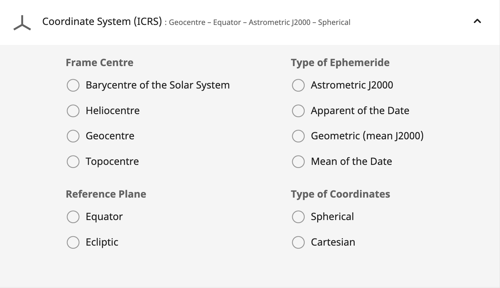

Modelling the Cosmos in Ruby
The sky is a lie
We see what's in the past
Sunrise and sunset times are fake
The Pole Star is not at the celestial pole
A day is not 24 hours
Build an accurate astronomy library with that
Hi, I'm Rémy
@rhannequin
Senior developer at thoughtbot
In love with astronomy
Let's meet and talk
🪐🍔🤖💻🍿
What are we going to talk about?
Complex domain models
Learn code design techniques
Code readability for collaboration and education
Context: Astronoby
Astronomical data and events accessible in Ruby
Position of planets in the sky 🪐
Rising, transit and setting times 🌄
Equinoxes and solstices times ☀️
Moon phases 🌙
Future:
Conjunctions, oppositions
Eclipses
Deep sky objects
Stargazing planner
Increase scientific support in the Ruby ecosystem
Azimuth: 123°44′47″
Altitude: 49°26′13″

Solar System Barycenter
Vector
Light-time
Precession
Nutation
Aberration
Deflection
Earth shape
Terrestrial time
Barycentric position
Geocentric astrometric position
Geocentric apparent position
Topocentric apparent position
Equatorial coordinates
Horizontal coordinates
How to deal with a large and complex domain?
Domain-Driven Design
DDD? 👍
Introduced in 2003 by Eric Evans
Reflects business domain
Focus on core domain
❌
Technical layers
Large exhaustive models
Uniform objects
✅
Business concepts
Multiple models with explicit boudaries
Entities and value objects
Ubiquitous Language
Ubiquitous Language
❌
class MoonState
def self.compute(state, time)
new(
time: time,
state: state
)
end
end✅
class MoonPhase
def self.full_moon(time)
new(
time: time,
phase: FULL_MOON
)
end
endWhen DDD?
Complex domain
Collaboration
Ruby ❤️ DDD
- OOP
- Expressiveness
- Modules
- Metaprogramming
DDD in Astronoby
Repositories
Ephem
Ephem
ephem = Astronoby::Ephem.load("de440s.bsp")
ephem[0, 3].position_at(2460819)
# => Vector[-71204709, -123739936, -53612310]Domain services
RiseTransitSetCalculator
MoonPhases
RiseTransitSetCalculator
calculator =
Astronoby::RiseTransitSetCalculator.new(
body: Astronoby::Sun,
observer: observer,
ephem: ephem
)
event = calculator.event_on(date)
# => Astronoby::RiseTransitSetEvent object
event.rising_time
# => 2025-05-23 05:54:08 +0200Value objects
Angle
Instant
Distance
Angle
angle = Astronoby::Angle.from_degres(240).hours
angle.hours
# => 16.0
angle.cos
# => -0.5Entities
Jupiter
Observer
Jupiter
jupiter = Astronoby::Jupiter.new(
ephem: ephem,
instant: instant
)
jupiter.apparent.distance.km
# => 904241448
ephem = Astronoby::Ephem.load("inpop19a.bsp")
time = Time.utc(2025, 5, 23, 14, 45, 0)
instant = Astronoby::Instant.from_time(time)
geneva = Astronoby::Observer.new(
latitude: Astronoby::Angle.from_degrees(46.2044),
longitude: Astronoby::Angle.from_degrees(6.1432),
elevation: Astronoby::Distance.from_meters(375)
)
sun = Astronoby::Sun.new(instant: instant, ephem: ephem)
topocentric = sun.observed_by(geneva)
topocentric.horizontal.altitude.degrees
# => 43.36620058310606
ephem = Astronoby::Ephem.load("inpop19a.bsp")
time = Time.utc(2025, 5, 23, 14, 45, 0)
instant = Astronoby::Instant.from_time(time)
geneva = Astronoby::Observer.new(
latitude: Astronoby::Angle.from_degrees(46.2044),
longitude: Astronoby::Angle.from_degrees(6.1432),
elevation: Astronoby::Distance.from_meters(375)
)
sun = Astronoby::Sun.new(instant: instant, ephem: ephem)
topocentric = sun.observed_by(geneva)
topocentric.horizontal.altitude.degrees
# => 43.36620058310606
ephem = Astronoby::Ephem.load("inpop19a.bsp")
time = Time.utc(2025, 5, 23, 14, 45, 0)
instant = Astronoby::Instant.from_time(time)
geneva = Astronoby::Observer.new(
latitude: Astronoby::Angle.from_degrees(46.2044),
longitude: Astronoby::Angle.from_degrees(6.1432),
elevation: Astronoby::Distance.from_meters(375)
)
sun = Astronoby::Sun.new(instant: instant, ephem: ephem)
topocentric = sun.observed_by(geneva)
topocentric.horizontal.altitude.degrees
# => 43.36620058310606Value objects
Replace primitives
Encapsulate data
No or little behaviour
Time
time = Time.now
time.hour
# => 16
time.to_i
# => 1747917900
distance1 = Distance.from_meters(1000)
distance2 = Distance.from_kilometers(1)
distance1 == distance2
# => true
distance3 = distance1 + distance2
distance3.to_meters
# => 2000
Comparable, #<=>, #+
Data
Without value object
declination_radians = declination_degrees * Math::PI / 180
latitude_radians = latitude_degrees * Math::PI / 180
hour_angle_radians = hour_angle_hours * 15 * Math::PI / 180
ratio = Math.sin(declination_radians) *
Math.sin(latitude_radians) +
Math.cos(declination_radians) *
Math.cos(latitude_radians) *
Math.cos(hour_angle_radians)
altitude_radians = Math.asin(ratio)Astronoby::Angle
ratio = declination.sin * latitude.sin +
declination.cos * latitude.cos * hour_angle.cos
altitude = Astronoby::Angle.asin(ratio)
Testing
DDD ❤️ Testing
Well-defined objects
Bounded contexts
Pragmatism
Source of truth: IMCCE, NASA/JPL

Performance
DDD & performance
Yes, but,
What is your priority?
Readability
Accuracy
Performance
Performance
Algorithms
Many objects
Low-level interfaces
Conclusion
What we learnt
Domain-Driven Design is hard to pronounce
DDD for managing complex domains
Ruby expressiveness helps
Beyond astronomy
1. Identify
2. Map the boundaries
3. Value objects
4. Separate
5. Don't overthink
Final Thoughts
Good models illuminate complex realities
Code can be both educational and functional
Ruby deserves a place in scientific computing